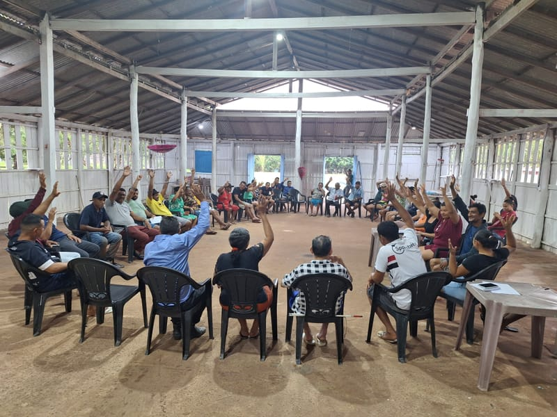
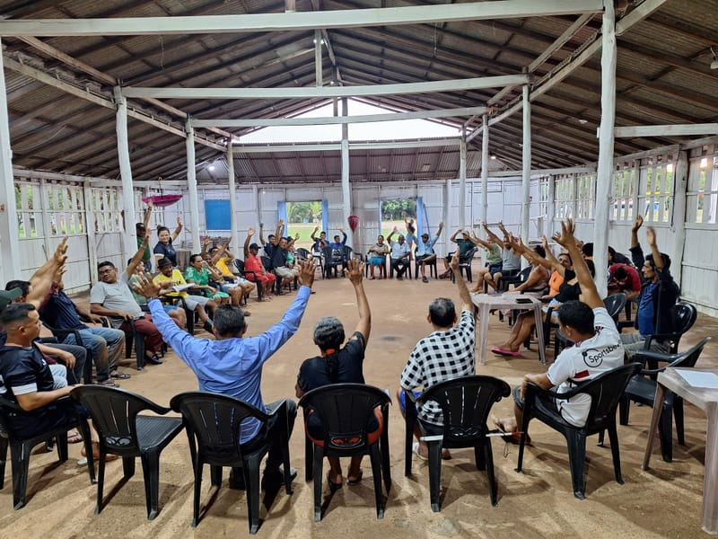
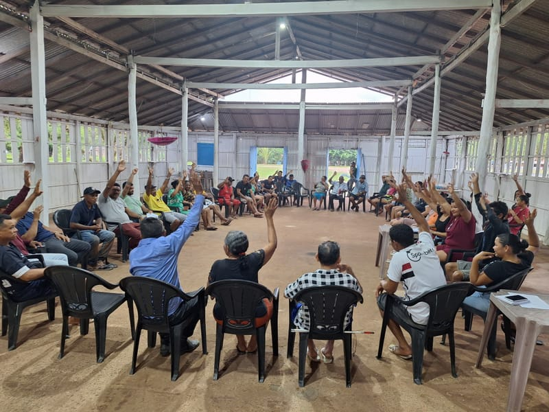

← Voltar para início
Sobre a AMPERO
A Associação de Moradores da Vila Melancial (AMPERO) é a entidade representativa da comunidade, dedicada a promover o desenvolvimento social, cultural e econômico da vila.
Fundada por lideranças locais, a AMPERO atua em diversas frentes, desde a busca por melhorias na infraestrutura até a organização de eventos e atividades comunitárias.
Principais Ações
- Representação da comunidade junto ao poder público
- Organização de festividades e eventos culturais
- Manutenção de espaços comunitários
- Projetos de geração de renda e capacitação
- Preservação ambiental e cuidados com a orla
Participe
A AMPERO está aberta à participação de todos os moradores. As reuniões acontecem mensalmente no salão comunitário. Junte-se a nós e contribua para o desenvolvimento da Vila Melancial!


